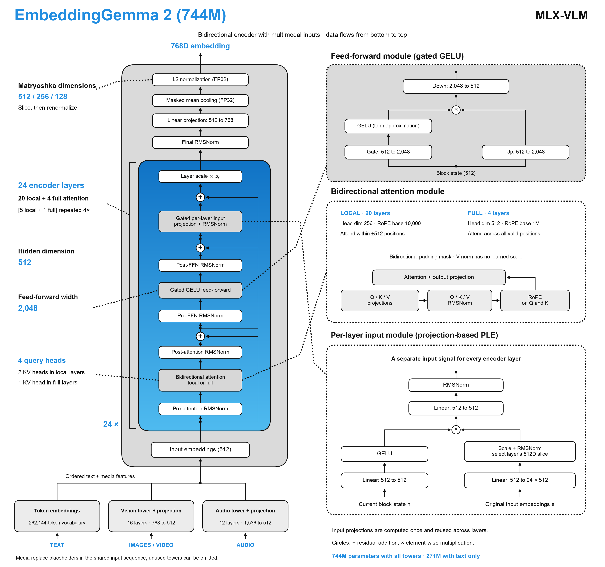

On an Apple M5 Max, our implementation reaches 817 text embeddings per second with batches of 32 short texts and closely matches the supplied reference model across all 20 documentation examples. Below, we walk through the architecture, performance across modalities, and the trade-offs of quantization. The implementation is available in MLX-VLM.
One space for every modality
EmbeddingGemma 2 produces a 768-dimensional vector for each input. That input can contain a single modality or a combination: a photograph with a description, several images, text interleaved with audio, or video frames with accompanying text. The processor preserves content order, allowing the model to represent the combined input as one embedding.
This shared representation supports cross-modal retrieval, semantic similarity, clustering, and classification pipelines. For example, a text query can be compared with embeddings of images, recordings, and video clips in the same search index. Optional task prompts provide context for retrieval, classification, clustering, code search, and other uses. Their effectiveness should be evaluated on the application’s own data. Model features and usage
Choose your embedding size
Matryoshka Representation Learning adds flexibility to the output size. Applications can retain the first 512, 256, or 128 dimensions of an embedding and normalize the result again. Queries and indexed documents must use the same dimension.
At the same storage precision, a 256-dimensional vector uses one-third of the raw vector storage of a 768-dimensional vector; 128 dimensions use one-sixth. This reduces storage and distance-comparison costs. The encoder still performs its forward pass, and retrieval quality at each dimension remains something to measure on the target dataset.
Inside the architecture
The architecture combines Gemma 4 vision and audio encoders with a 24-layer bidirectional text encoder. Images and sampled video frames pass through the vision encoder, while audio passes through the audio encoder. Their features are projected into the text encoder’s 512-dimensional input space and inserted alongside text-token embeddings.


The shared encoder alternates five local-attention layers with a full-attention layer. Local attention uses a radius of 512 positions in each direction; full attention connects information across the complete input. Because attention is bidirectional, token representations can incorporate context from both earlier and later positions.
Each layer also receives a learned projection of the original input representations through the model’s per-layer input mechanism. After the encoder, a linear projection maps token states to 768 dimensions. Mean pooling combines the non-padding token representations, and float32 L2 normalization produces the final vector. Prompt and media tokens participate in pooling.
The complete model contains approximately 744 million parameters. Disabling the audio tower reduces this to approximately 439 million; disabling both media towers leaves a text-only model of approximately 271 million parameters. This allows deployments to load only the modalities they need.
Visual processing is configurable as well. Supported soft-token budgets range from 70 to 1,120 per image or frame. Video processing exposes sampling rate, frame limits, overflow handling, and optional timestamps. These controls affect how much visual information enters the encoder and therefore the computation required.
Performance on the M5 Max
Our performance measurements used an Apple M5 Max with 128 GiB of unified memory. The batch sweep covered sizes 1, 2, 4, 8, 16, and 32 across BF16 and three quantized formats.
The following table shows BF16 throughput and peak active memory:
| Input | Batch 1 | Batch 32 | Throughput change | Memory at batch 32 |
|---|---|---|---|---|
| Text, 128 tokens | 167.3 texts/s | 817.4 texts/s | 4.9× | 2.51 GB |
| Image | 22.8 images/s | 21.2 images/s | 0.93× | 14.44 GB |
| Audio, 5.855-second recording | 38.5 recordings/s | 85.4 recordings/s | 2.2× | 3.53 GB |
| Video, 5-second clip sampled into five frames | 9.75 videos/s | 8.80 videos/s | 0.90× | 33.66 GB |
A batch of 32 short texts completed in approximately 0.039 seconds. Longer text reached its best measured BF16 throughput at a smaller batch size: 512-token inputs peaked at approximately 190 texts per second with batch 8.
Audio also benefited from batching, reaching its best measured BF16 throughput at batch 16. Image and video workloads behaved differently. Their throughput stayed roughly flat or declined, while memory consumption increased. For video, peak active memory grew from approximately 3.10 GB at batch 1 to 33.66 GB at batch 32. Detailed batch results

Quantization and fidelity
Quantization primarily reduced weight storage in these tests. The standard conversion policy quantized the text encoder and audio projection while retaining the vision encoder, audio encoder, and vision projection in BF16. Consequently, whole-model savings were smaller than the savings within the text encoder.
| Format | Total weight storage | Storage reduction | Minimum embedding cosine vs. FP32 reference |
|---|---|---|---|
| BF16 | 1.489 GB | — | 0.999791 |
| 8-bit | 1.234 GB | 17.1% | 0.999662 |
| 6-bit | 1.166 GB | 21.7% | 0.997708 |
| 4-bit | 1.098 GB | 26.2% | 0.967160 |
8-bit provided a useful memory–fidelity trade-off, closely preserving the reference embeddings while reducing total weight storage by approximately 17%. Both 8-bit and 6-bit passed all 20 examples under the quantization validation thresholds.
Standard affine 4-bit quantization introduced substantially more numerical drift, failing those thresholds in 18 of the 20 examples. Its outputs remained finite and normalized, but the additional drift makes downstream retrieval evaluation particularly important.
Quantization did not produce a consistent speed improvement. BF16 was fastest in the single-input text, image, and audio measurements; small video differences were within observed timing variation. Quantization and latency measurements
Validation and methodology
Numerical validation covered all 20 supplied documentation examples, with 32 paired forward comparisons per precision and additional checks of the shorter Matryoshka vectors. Float32 MLX embeddings had a maximum absolute component error of approximately 5.79 × 10⁻⁷ against the float32 reference. BF16 achieved a minimum embedding cosine similarity of 0.9997906.
The batch sweep also passed all 240 batch-versus-single consistency checks, with a minimum cosine similarity of approximately 0.999886 against the same checkpoint’s individual output. These measurements establish implementation fidelity and batching consistency; they do not establish retrieval quality on a benchmark such as MTEB.
All performance figures measure warmed, synchronized model execution, including the applicable media encoders, pooling, and normalization. They exclude file decoding, preprocessing, model loading, and initial compilation. The batch tests repeat fixed inputs and therefore describe homogeneous workloads rather than a production queue containing varying lengths and media sizes. Memory figures represent active MLX allocations, not total process memory.
Putting it into practice
For the tested M5 Max, BF16 provides a strong starting point when speed and numerical fidelity matter most. Larger batches are useful for short-text indexing and audio workloads, while image and video applications should choose batch sizes carefully. Applications constrained by memory can first disable unused modality towers, then evaluate 8-bit quantization and smaller embedding dimensions against their own retrieval requirements.